How to prepare tapes, write and verify, restore, and deliver with TapeVault on Windows and macOS. Updated for version 1.3.1 (Windows and macOS).
📄 Download PDFTapeVault records production footage to LTO tape (LTFS), verifies every file, and lets you find and restore it later. This manual covers version 1.3.1 for Windows and macOS. Library (autoloader) control is in the Windows version only. Other differences between the two are noted where they apply.
| System | What you need |
|---|---|
| Windows | 64-bit Windows 10/11 · IBM LTFS SDE (Spectrum/Storage Archive Single Drive Edition) · LTO drive and SAS HBA driver |
| macOS | Apple Silicon or Intel Mac · macOS 13 or later · LTFS · macFUSE · LTO drive and SAS HBA driver |
| Both | ffmpeg for video thumbnails (optional). Without a drive you can still try TapeVault with the local archive. |
Follow the Install Guide for the install order and drivers. On Windows, the TapeVault Install Assistant can check the PC first.
The license screen appears on first launch.
| Method | Steps |
|---|---|
| Sign up | Create an account with your email and a password (8+ characters); the 1-month trial starts right away. |
| Sign in | Sign in with an account that already has a license. The number of PCs you can register depends on the license (Copies). |
| Offline | For PCs without internet: send the Machine ID from the Offline tab to support@tapevault.net and load the license file (.tvlic) you receive. |
| License request | Request a purchase, renewal or edition change. Without internet, save a request file (.tvreq) and send it. |
Editions: Starter supports up to 2 drives; Autoloader has no drive limit and, on Windows, adds tape library (autoloader) control.
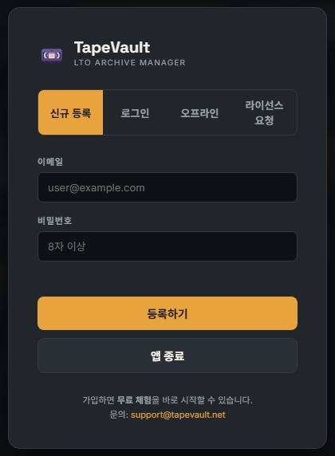
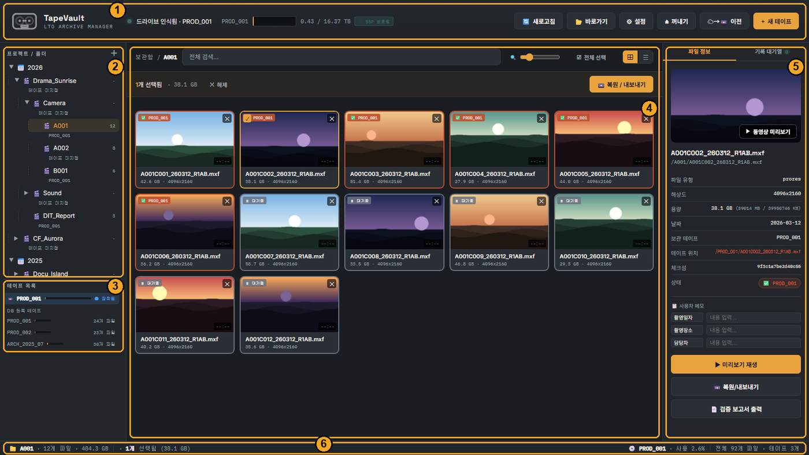
| Area | What it shows |
|---|---|
| Top bar | Drive status, tape name and usage, plus Refresh · 📂 Open · Settings · Eject · Migrate · New tape. With two drives each drive gets its own row; the row marked Active is the drive you are working with (click a row to switch). |
| Left: folder tree | The folder structure you archive into — it becomes the folder structure on tape. The tape list is below it. |
| Center: file cards | Files and subfolders of the selected folder. Status is shown by color and badge (Pending · Copying · Verifying · Done · Failed · Source missing). |
| Right | Details and actions for the selected file, and the write queue of files to be written to tape. |
| Bottom progress bar | Write/restore progress, size processed, speed and time remaining. |
| Message | Meaning / what to do |
|---|---|
| Drive detected · (tape name) | The tape is ready to use. |
| Reading tape (1–3 min) | The tape is being read. Please wait. |
| Please insert a tape | The drive is connected but has no tape. If you just inserted one, click Refresh. |
| Unformatted tape | A new tape. Format it when asked. |
| LTFS letter not assigned (Windows) | IBM SDE lost the drive letter. TapeVault reassigns it automatically. |
| No drive | Check power, cable and HBA driver. Right after power-on the drive may show this for about a minute. |
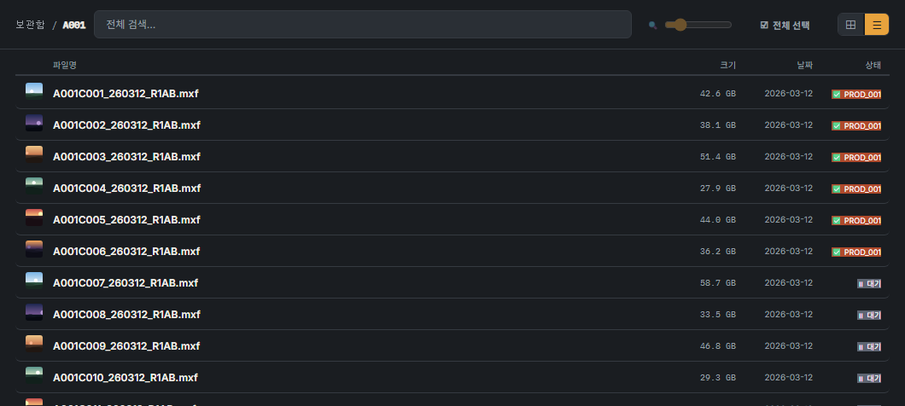
Insert a tape and TapeVault detects it automatically (usually 1–3 minutes). On Windows, if IBM SDE loses the drive letter after a reboot, TapeVault restores the previous letter automatically.
Settings → 🧹 Format tape. In the dialog, ① type the current tape name to confirm the deletion and ② enter the name the tape should have after formatting — keep the old name or type a new one to rename it. The tape is formatted and its old records are removed from the catalog. (In versions before 1.3.0 the two questions appear one after the other: first the current name, then the new name.)
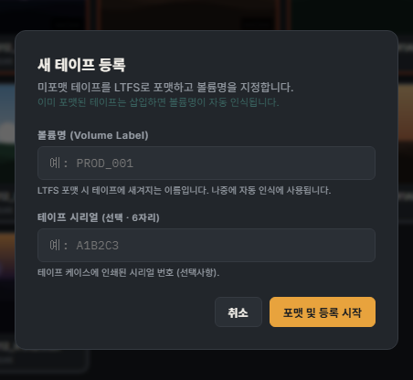
An LTFS tape written by another program mounts normally, but its files are not in the catalog yet. Import its contents to search and restore from it.
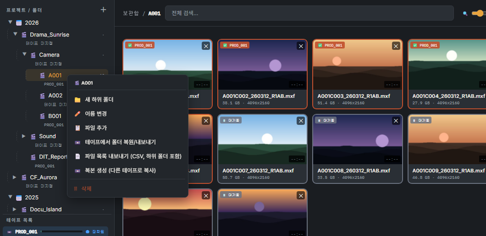
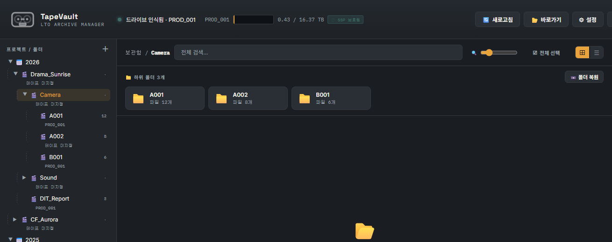
Check the list and size in the write queue and click ▶ Start writing. Each file is written to tape, then read back and verified. xxHash64 and MD5 of the source are calculated while copying and compared with the values read back from tape; only verified files keep their final name.
The write progress bar has three buttons:
In every case, files already written stay on the tape, and files that were not written remain Pending so you can write them later.
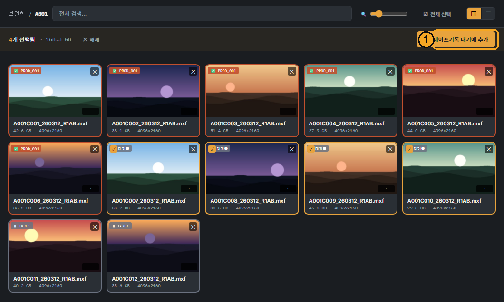
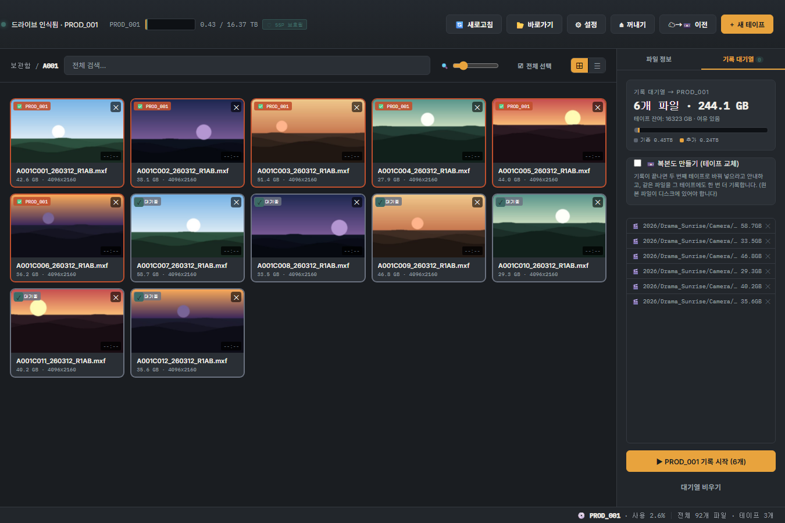
Right-click a tree folder → Restore / export folder from tape (or 📼 Restore folder at the top of the folder view). Files of the folder and all its subfolders are restored with the original folder structure. If they span several tapes, files on the loaded tape are restored first; run it again for the rest.
Right-click a tree folder → Export file list. Every file in the folder and its subfolders is saved to one CSV: folder path, file name, size, tape, copy tapes, status, duration, resolution, codec, fps, checksums and archive time. It opens cleanly in Excel.
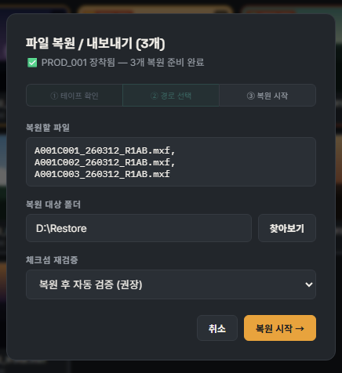
Turn on Replication / Spanning in Settings. When both drives have a tape, choose the mode in the write queue.
| Mode | Behavior |
|---|---|
| Manual (default) | Writes to the drive selected in the top bar. While one drive is writing you can start a separate write on the other drive. |
| Replication | Writes the same files to both tapes at once. The source is read once and each tape is verified separately; speed follows the slower drive. |
| Spanning | If the files do not fit on the selected tape, the overflow continues on the other drive's tape. |
TapeVault creates manifests on tape automatically to match studio delivery specs. The two modes cannot be on at the same time.
| Mode | What it does |
|---|---|
| Disney delivery mode | Turn it on in Settings. Files are written without the top-level (year) folder, and after each write a FolderName.md5 (MD5 Manifest v1.1) is created or updated at the tape root for each category folder. |
| Netflix delivery mode | Turn it on in Settings. Files are written without the top-level folder and new tapes are formatted without hardware compression. After each write an ASC MHL v2.0 (xxHash64) is created, or a new generation added, in ascmhl/ of each roll folder. |
Writing without a tape stores files in the local archive on the computer (cards with a purple border). Later, insert a tape and click Migrate in the top bar, or queue the local files, to move them to tape. You can change the archive location in Settings (existing files are not moved automatically).
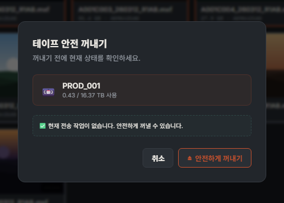
| Item | Description |
|---|---|
| License | Edition, expiry and account; request or renew a license |
| Local archive | Folder used when writing without a tape |
| 🧹 Format tape | Re-format the loaded tape |
| 📥 Import tape contents | Register the folders and files of a tape made with another program |
| Buffer SSD path | Temporary folder used when the source is a slow external or network disk |
| Thumbnail / DB / log location | Shows the actual folders and opens them. The DB item can save a catalog report (CSV). |
| Checksum | xxHash64 (verification) + MD5 (delivery) calculated together |
| Shoeshine Protection | Uses the buffer when needed so the tape keeps streaming |
| Auto thumbnails · notifications | Automatic thumbnails and job-complete notifications |
| Language | Korean / English |
| Disney · Netflix delivery mode | See Delivery modes |
| Replication / Spanning | Choose the write mode with two drives |
| Library (Windows · Autoloader) | Find library finds a connected autoloader so you can register it. Once registered, the Library tab appears. See Library (autoloader). |
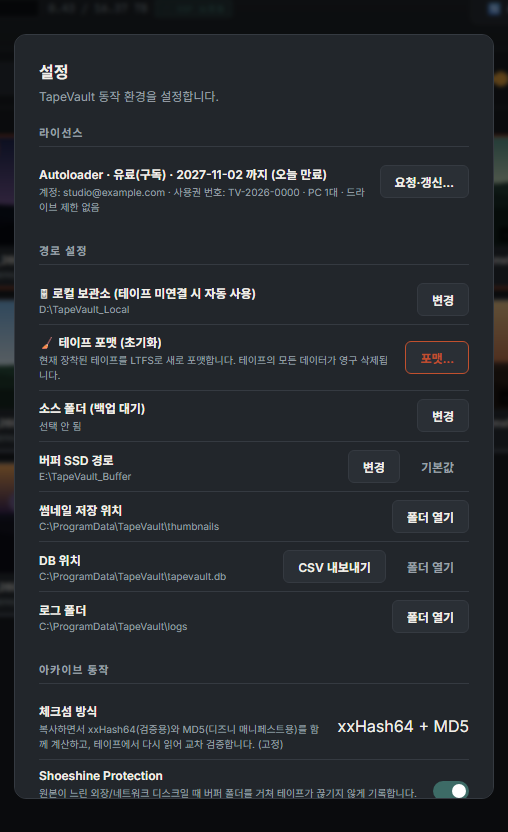
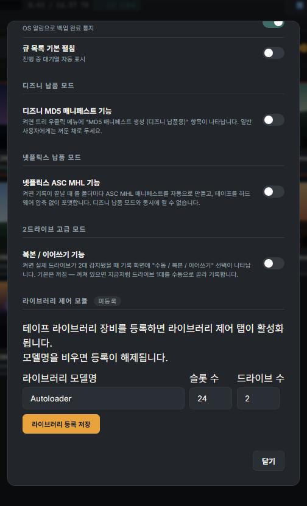
Windows · Autoloader edition. Uses the robot in an autoloader (tape library) to move tapes between slots and drives. The robot only moves when you press a button.
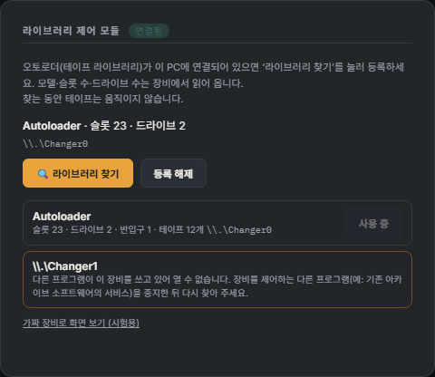
Click the 📼 Library tab in the right panel to open a wide window.
| Part | Description |
|---|---|
| Slots | Each slot shows the tape name and barcode. Tapes not in the catalog show as Unregistered tape; cleaning cartridges are blue. Type a name or barcode in the box at the top right to find a tape. |
| Drives | Each drive shows its tape and status (waiting to be recognized · ready · writing). Return to slot puts the tape back in its original slot. |
| Selected tape | Click a tape in a slot to load it into a drive, move it to another slot, export it to the mail slot, link a tape name, or show its files. |
| Mail slot | Where tapes go in and out, one tape at a time. |
| Re-read barcodes | Reads the slot contents again after you change tapes by hand. |
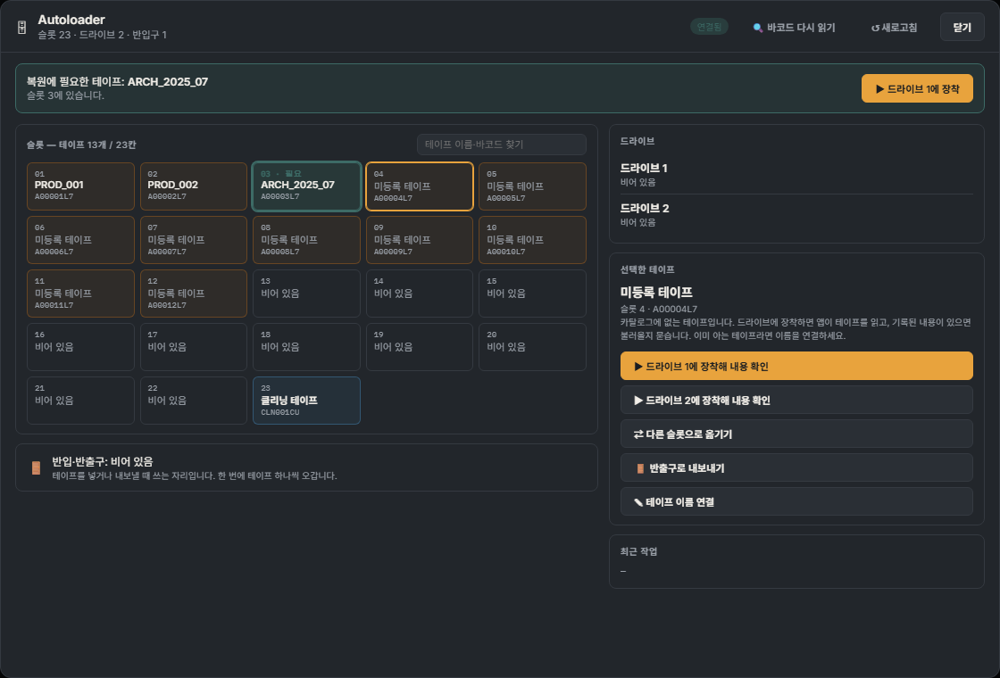
If the tape to restore from is not in a drive, the restore window shows which library slot it is in and a ▶ Load into drive N button. Press it and the robot moves the tape (about a minute); once the tape is recognized (usually 1–2 minutes), the Next button turns on.
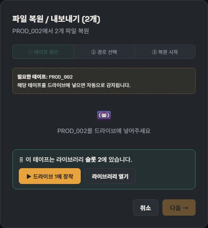
When a write or restore finishes, the app asks whether to return the tape to its slot. It safely ejects the tape first (saving the index), then moves it back. Press Cancel if you will keep using it. A tape that is being written cannot be returned.
Library control is not available in the macOS version.
| Symptom | Solution |
|---|---|
| "No drive" keeps showing | Check drive power, cable and HBA driver. On Windows check the tape drive in Device Manager and the IBM SDE install; on macOS check ltfs -o device_list in Terminal. |
| Tape inserted but "Please insert a tape" | Wait 1–2 minutes and click Refresh. If it persists, re-insert the tape. |
| "LTFS letter not assigned" (Windows) | Wait a moment — TapeVault reassigns the letter automatically. If it persists, restart the app. |
| Eject failed — tape in use | Close the program named in the message (Explorer/Finder window, another tape program) and eject again. |
| Writing seems stuck for minutes | The drive may be retrying. If it happens often, clean the head with a cleaning cartridge and compare with another tape. If a file does not move at all, you can end the write with Stop now on the progress bar. |
| "This license is not registered to this PC" | Turn the network (Ethernet / Wi-Fi) that was on during activation back on and restart the app. If it persists, contact support. |
| No thumbnails | Make sure ffmpeg is installed. Zero-byte files and files without a source cannot have thumbnails. |
| SmartScreen warning when running the Windows installer | The installer is signed by VETERAN IT. Check that the publisher is VETERAN IT, then click More info → Run anyway. |
| "Tape connection lost — writing stopped" | Check the drive display for an error code, and check the cables and power. If the tape will not eject, shut down the computer and power-cycle the drive. Then insert the same tape and run Recover & re-verify (복구·재검증): TapeVault repairs the tape index, checks that the files written in that job are really on the tape, and returns missing files to Pending. Keep the source files until this is done. On Windows, IBM LTFS SDE handles the tape connection, so TapeVault does not repair the index itself: once the tape is recognized again, it re-verifies the files and returns missing ones to Pending. |
| The tape keeps spinning for a long time after you insert it | A new LTO-9 cartridge is calibrated the first time it is loaded (20 minutes to 2 hours) — this is normal, so wait. A tape whose write was interrupted can also take a long time while the end of its data is located. Do not power off the drive. If it does not finish, contact support. |
| Tape space did not come back after deleting files | This is how LTFS works: deleted files only disappear from the list. To reclaim the space, format the tape in Settings (everything on the tape is erased). |
| A tape from another program mounts but shows no files | Its files are not in the catalog yet. Use Settings → 📥 Import tape contents. |
| "In use by another program" in Find library | Another program (such as existing archive software) is holding the autoloader. Stop that program and its service, then search again. |
| "Could not verify the account or license" in Send logs | Sign in again in that window, or press Save to file and email the zip to support@tapevault.net. |
To report a problem, use Support → Send logs in the top menu. Without internet, use Save logs to file and email the zip with a screenshot.
The Support menu at the top of the app has the following (Windows and macOS).
| Menu | Description |
|---|---|
| Send logs… | Sends a description of the problem and recent logs (1–14 days) to the support team. You see what will be sent and the file list first, and nothing is sent until you press Agree and send. Folder and file names inside paths are replaced with short codes by default. Video files, the catalog database and passwords are never sent. You get a ticket number (e.g. T-1012) on screen and by email. If you are already in touch with support, enter that ticket number to attach the logs to it. |
| Save logs to file… | On a PC without internet, save a zip file and email it to support@tapevault.net. |
| Open log folder | Opens the folder with the log files (tapevault_YYYY-MM-DD.log). |
| Download user manual | Saves the PDF of this manual to your Downloads folder and opens it. |
| View online manual | Opens this page in your browser. |
| Check for updates… | Checks for a new version right away. |
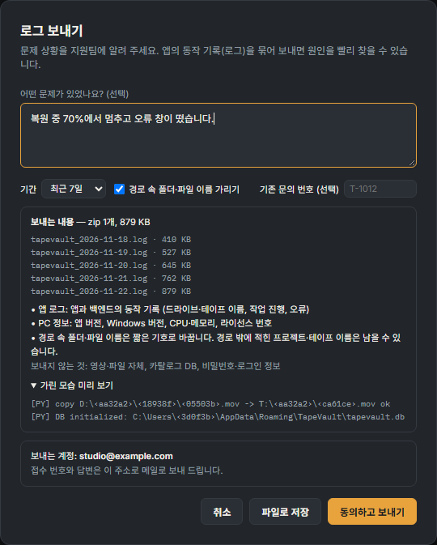
The app checks for a new version at startup and every 12 hours, and shows a notice in the lower right when one is available.
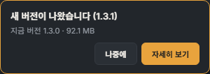
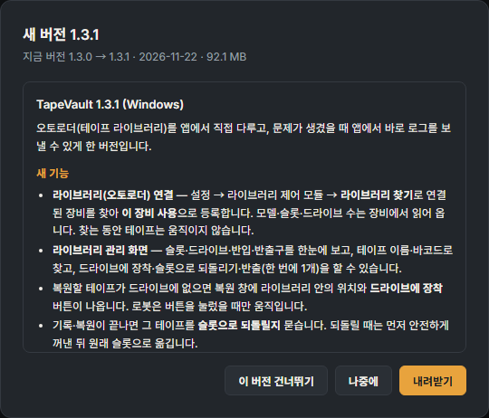
For anything else, email support@tapevault.net. Including the ticket number from Send logs helps us respond faster.